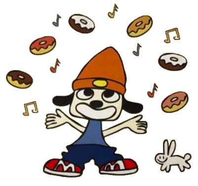
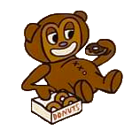
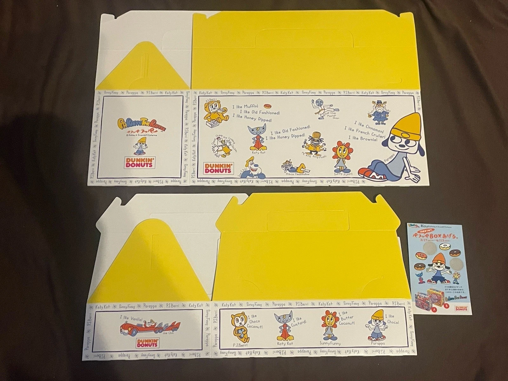
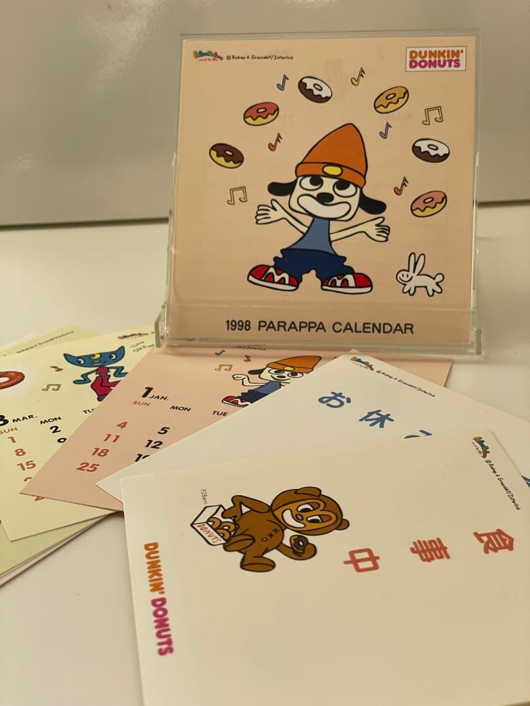
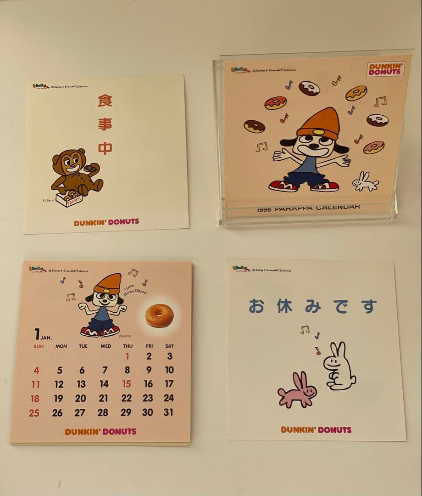
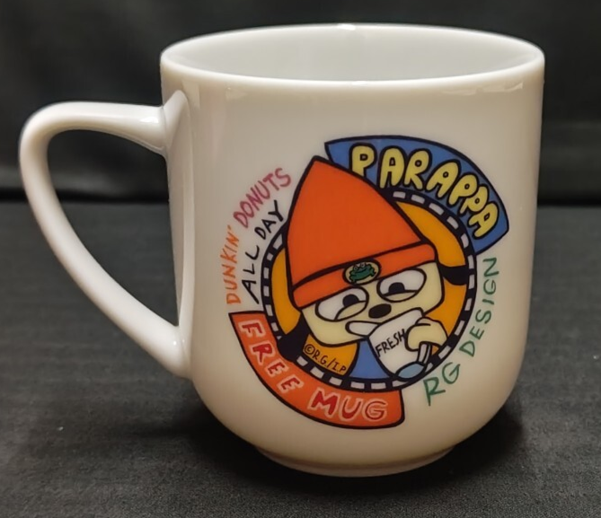
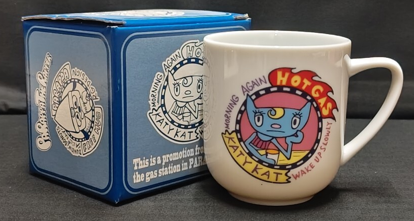
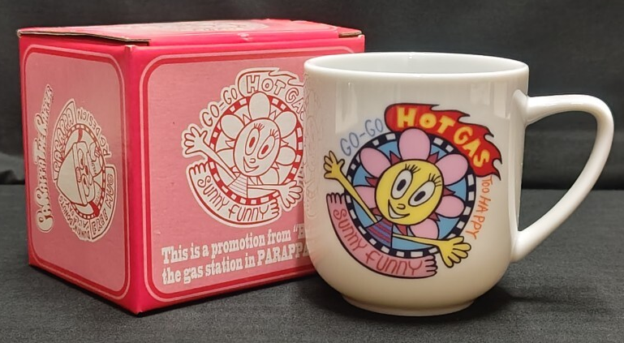
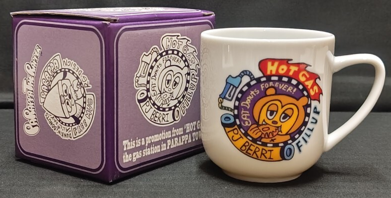

DUNKIN' DONUTSダンキンドーナツ
Dunkin' Donuts Japan ran a PaRappa the Rapper tie-in campaign in 1998, producing a range of in-store premiums and giveaways featuring PaRappa, Katy Kat, Sunny Funny, PJ Berri, Master Onion, and the rest of the gang. The line is best remembered for its Munchkin-box food packaging, the 1998 PaRappa desktop calendar set, and the "Secret Donut Protector" PaRappa-illustrated tin lunchbox depicting PaRappa Town's storefront row. Surviving pieces — especially sealed sets — are highly collectible today.
ダンキンドーナツ ジャパンは1998年にパラッパラッパーとのタイアップキャンペーンを実施し、パラッパ、ケイティ・キャット、サニー・ファニー、PJベリー、マスター・オニオンらキャラクターを起用した店頭プレミアム・ノベルティを多数展開しました。なかでも有名なのが、マンチキン・ボックスのフードパッケージ、1998年版パラッパ卓上カレンダーセット、そしてパラッパタウンの商店街が描かれた「シークレット・ドーナツ・プロテクター」パラッパ柄ブリキ製ランチボックスです。現存数は少なく、特に未開封状態のものは現在でも高い人気を誇るコレクターズアイテムです。
— MUNCHKIN BOX (FOOD PACKAGING) —— マンチキン・ボックス（フードパッケージ）—

Dunkin' Donuts × PaRappa Munchkin Boxes — two flattened, unfolded yellow Munchkins boxes from the 1998 campaign. The top box prints each character's favourite donut order ("I like the Muffin", "I like the Old Fashioned", "I like the Honey Dipped", "I like the French Crull", "I like the Brownie") with a row of mini character illustrations and the PaRappa-the-Rapper logo plus the red Dunkin' Donuts logo on the side flap. The bottom box features Katy Kat, Sunny Funny, PJ Berri, and PaRappa lined up across the front, a "Po Q Cool!" character strip, and a Dunkin' × PaRappa promo card tucked alongside.ダンキンドーナツ × パラッパ マンチキン・ボックス — 1998年キャンペーンで配布された黄色いマンチキン用箱を解体した2点。上の箱は各キャラクターの好物オーダー（「I like the Muffin」「I like the Old Fashioned」「I like the Honey Dipped」「I like the French Crull」「I like the Brownie」）が並び、ミニキャラクターのイラスト列とパラッパラッパーのロゴ、サイドフラップには赤いダンキンドーナツのロゴが配されている。下の箱はケイティ・キャット、サニー・ファニー、PJベリー、パラッパが正面に並び、「Po Q Cool!」キャラクター帯、そしてダンキン×パラッパのプロモーションカードが添えられている。
— 1998 PARAPPA DESKTOP CALENDAR SET —— 1998年版パラッパ 卓上カレンダーセット —

1998 PaRappa Calendar (Boxed) — the Dunkin' Donuts Japan campaign desktop calendar set in its acrylic display stand. The cover card shows PaRappa dancing inside a ring of donuts and music notes with "1998 PARAPPA CALENDAR" beneath. Behind it, the full deck of monthly cards and bonus shop-status cards (used by Dunkin' Donuts staff) is fanned out.1998年パラッパカレンダー（化粧ケース入り）— ダンキンドーナツ ジャパンのキャンペーン用卓上カレンダーセットを透明ケースに立てた状態。表紙カードはドーナツと音符に囲まれて踊るパラッパに「1998 PARAPPA CALENDAR」のロゴが入る。背後には全月分のカードと、ダンキン店舗スタッフが使うステータス告知カードがまとめて広げられている。

Calendar Cards (set 1) — clockwise from top-left: a "食事中" (Out to lunch) shop-status card with PJ Berri eating; the donut-pattern cover card with PaRappa front and centre; a "お休みです" (Closed today) card with Pinto the rabbit; and the January 1月 month card featuring PaRappa singing into a donut. Each card carries the red Dunkin' Donuts logo at the bottom edge.カレンダーカード（その1）— 左上から時計回りに、食事中を告げるPJベリーのカード、パラッパが中央に立つドーナツ柄の表紙カード、ピント・ザ・ラビットの「お休みです」カード、ドーナツに向かって歌うパラッパが描かれた1月のカレンダーカード。各カードの下端には赤いダンキンドーナツのロゴが入る。

Calendar Cards (set 2) — clockwise from top-left: a "すぐもどりま〜す" (Back in a moment) shop-status card; a Name / Phone memo card; the February 2月 month card with a singing Katy Kat surrounded by music notes and a donut "moon"; and a "本日閉店" (Closed for the day) card with sleeping frogs. The full set doubled as both a calendar and the in-store status signage Dunkin' Donuts staff would put on the counter.カレンダーカード（その2）— 左上から時計回りに、「すぐもどりま〜す」のスタッフ告知カード、Name / Phone欄付きの伝言メモカード、ケイティ・キャットが音符とドーナツの“月”に囲まれて歌う2月のカレンダーカード、眠るカエルが描かれた「本日閉店」カード。セット全体がカレンダーとしても、ダンキン店舗のカウンター告知としても使えるように設計されている。

Monthly Cards — May (5月) with a donut sun and PJ Berri, March (3月) with Sunny Funny tossing a donut, September (9月) with Master Onion mid-kick, July (7月) with PJ Berri lounging in a donut tube, and November (11月) with PaRappa rapping. Each month features a different character drawn in the original 1998 game-art style.月別カード — 5月はドーナツの太陽とPJベリー、3月はドーナツを掲げるサニー・ファニー、9月は蹴りを繰り出すマスター・オニオン、7月はドーナツの浮き輪でくつろぐPJベリー、11月はラップするパラッパ。各月のカードに1998年当時のゲーム原画風タッチで異なるキャラクターが描かれている。

Monthly Cards (cont.) — June (6月) with PJ Berri and a donut spaceship, a teddy-bear bonus card, October (10月) with PaRappa in a Halloween donut scene, August (8月) with a frog at the beach, and December (12月) with PaRappa holding a starlit donut ornament. The full 12-month spread plus accessory cards completes the Dunkin' × PaRappa desktop set.月別カード（続き）— 6月はPJベリーとドーナツ型宇宙船、テディベア柄のおまけカード、10月はハロウィン仕様のパラッパとドーナツ、8月はビーチのカエル、12月はキラキラのドーナツオーナメントを掲げるパラッパ。全12か月分とおまけカードでダンキン×パラッパの卓上セットが完成する。
— "SECRET DONUT PROTECTOR" PARAPPA TIN LUNCHBOX —— 「シークレット・ドーナツ・プロテクター」パラッパ ブリキ製ランチボックス —

"Secret Donut Protector" Tin (Sealed) — sealed in the original red-and-white star-print Dunkin' Donuts carry bag with the carrying handle hole at the top. The pink lid label reads "SECRET DONUT PROTECTOR — OFFICIAL PARAPPA — USE ONLY WITH DUNKIN' DONUTS" and is decorated with mock collector "achievement" badges around a central donut crest.「シークレット・ドーナツ・プロテクター」缶（未開封）— 赤と白の星柄が入ったオリジナル ダンキンドーナツ持ち帰り袋に密封された状態で、上部には持ち手の穴がある。ピンクの天面ラベルには「SECRET DONUT PROTECTOR — OFFICIAL PARAPPA — USE ONLY WITH DUNKIN' DONUTS」とプリントされ、中央のドーナツ紋章を囲むようにコレクター風の“バッジ”があしらわれている。

Tin Lunchbox (Front Face) — the front of the "Secret Donut Protector" tin features the iconic PaRappa Town storefront row: "Katy's Clothes" (blue boutique), "Sunny's Guitars" (yellow flower-shaped shop), the striped "Dunkin' Donuts" tent, "EAT" (the PJ Berri diner), and "PaRappa Records." Below, Katy Kat, Sunny Funny, PJ Berri, and PaRappa are seen walking along the sidewalk together. The carry handle on top still wears the red star-print PaRappa-the-Rapper bag header.ブリキ ランチボックス（正面）— 「シークレット・ドーナツ・プロテクター」缶の正面には、パラッパタウンの代表的な商店街が描かれている。青いブティック「Katy's Clothes」、黄色い花型の「Sunny's Guitars」、ストライプ屋根の「Dunkin' Donuts」、PJベリーのダイナー「EAT」、そして「PaRappa Records」。下段にはケイティ・キャット、サニー・ファニー、PJベリー、パラッパが歩道を並んで歩く様子が描かれる。上部にはまだ赤い星柄パラッパラッパー袋のヘッダーが残っている。

Tin Lunchbox (In Carry Bag) — the same tin shown still sealed inside the red-and-white "DUNKIN' DONUTS" star-print carry bag, which doubles as the campaign's retail packaging and serves as the proof-of-authenticity for collectors. PaRappa Town's full storefront row is visible through the clear face of the bag.ブリキ ランチボックス（持ち帰り袋入り）— 同じ缶を、赤と白の「DUNKIN' DONUTS」星柄プリント持ち帰り袋に未開封のまま収めた状態。この袋がそのままキャンペーンの販促パッケージとなり、コレクターの間では真贋判定の手がかりとしても使われる。透明面からはパラッパタウンの商店街がはっきり確認できる。
— MUGS —— マグカップ —
A set of white ceramic free mugs tied to "HOT GAS," the gas station in PaRappa Town. Each printed gift box notes "This is a promotion from 'HOT GAS', the gas station in PaRappa Town," and each mug features a different character — PaRappa, Katy Kat, Sunny Funny, and PJ Berri — drawn in the original RG Design game-art style.
パラッパタウンのガソリンスタンド「HOT GAS」にちなんだ白い陶器製の無料マグカップシリーズ。プリント箱には「This is a promotion from 'HOT GAS', the gas station in PaRappa Town」と記され、パラッパ、ケイティ・キャット、サニー・ファニー、PJベリーがそれぞれRGデザインのゲーム原画風タッチで描かれている。

PaRappa Mug — white ceramic mug printed with a winking PaRappa holding a "FRESH" donut bag, ringed by "DUNKIN' DONUTS · ALL DAY" and "PARAPPA · FREE MUG." Credited "RG DESIGN" with the ©R.G/I.P rights mark.パラッパ マグカップ — ウインクして「FRESH」のドーナツ袋を持つパラッパがプリントされた白い陶器製マグ。「DUNKIN' DONUTS · ALL DAY」「PARAPPA · FREE MUG」の文字が囲み、「RG DESIGN」のクレジットと©R.G/I.Pの権利表記が入る。

Katy Kat Mug — Katy Kat stretching awake inside a film-strip ring reading "MORNING AGAIN · HOT GAS" and "KATY KAT · WAKE UP SLOWLY," shown beside its blue printed gift box.ケイティ・キャット マグカップ — フィルム帯のリングの中で伸びをして目覚めるケイティ・キャット。「MORNING AGAIN · HOT GAS」「KATY KAT · WAKE UP SLOWLY」の文字が入り、青いプリント箱とともに撮影されている。

Sunny Funny Mug — a beaming Sunny Funny with arms outstretched, circled by "GO-GO HOT GAS" and "SO HAPPY · Sunny Funny," shown next to its pink printed gift box.サニー・ファニー マグカップ — 両腕を広げて満面の笑みを浮かべるサニー・ファニー。「GO-GO HOT GAS」「SO HAPPY · Sunny Funny」の文字が囲み、ピンクのプリント箱とともに撮影されている。

PJ Berri Mug — PJ Berri framed in a tyre-and-film ring reading "HOT GAS · EAT DONUTS FOREVER!" and "PJ BERRI · FILL UP," shown with its purple printed gift box.PJベリー マグカップ — タイヤとフィルムを模したリングに収まるPJベリー。「HOT GAS · EAT DONUTS FOREVER!」「PJ BERRI · FILL UP」の文字が入り、紫のプリント箱とともに撮影されている。